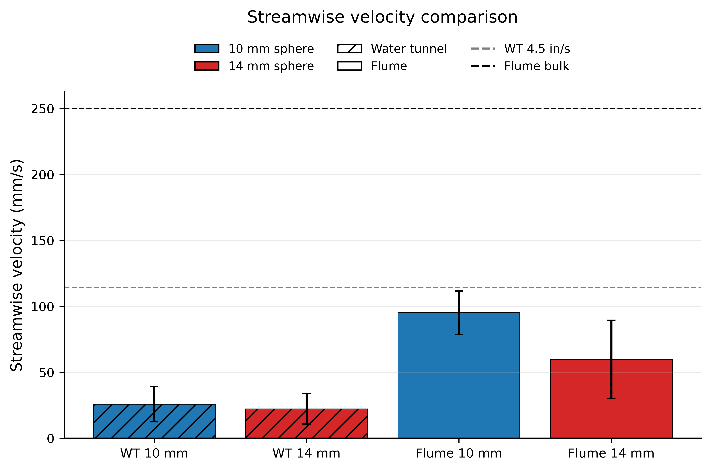
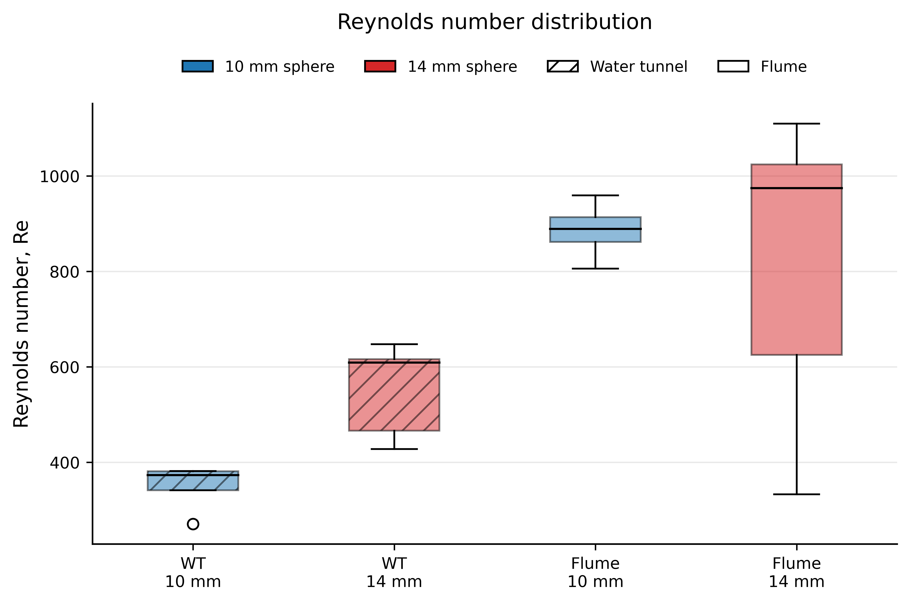

Tracking Plastics in Moving Water
An individual Master's research project: turning raw high-speed footage of plastic fragments in a laboratory flume into validated, physically-meaningful trajectory data, built end-to-end in Python and OpenCV.
The problem
Plastic pollution in rivers and oceans is not uniform. How a fragment travels through moving water depends heavily on its shape, size, and orientation: a sphere, a rod, and a flat disc of the same material behave very differently in the same flow. Understanding that behaviour is a prerequisite for modelling where plastics accumulate and how to intercept them.
The experimental challenge: you can film a particle moving through a flume, but a video is not data. To say anything quantitative, you need the particle's exact position in every single frame, reconstructed reliably despite reflections, bubbles, changing light, and the container walls, then converted from pixels into real-world velocities and physics. That conversion, from raw footage to trustworthy trajectory data, was the core of this project, and it was mine to build from scratch.
What I built
A modular Python/OpenCV pipeline that:
- Detects and tracks a plastic particle through every frame of high-speed video, with a separate tuned tracker for each particle geometry (sphere, rod, disc).
- Smooths and validates each trajectory using Kalman filtering and automated quality-control checks designed to catch the tracker locking onto the wrong thing.
- Calibrates pixel coordinates into real-world distances using per-view homography.
- Derives the physics: instantaneous and streamwise velocity, orientation, projected area, and pooled comparisons across particle types, regenerating every report figure directly from the exported data.
The engineering detail
Geometry-specific tracking
A single generic tracker fails here, because a tumbling rod, a spinning disc, and a rolling sphere present completely different visual signatures. So the pipeline splits into three purpose-built trackers:
- Spheres: colour and grayscale segmentation (including distinguishing red vs. white spheres), followed by Kalman smoothing.
- Rods: binarised contour extraction, fitting a quadrilateral to the rod each frame, plus orientation estimation, then Kalman smoothing.
- Discs: binarised contours with projected-area and orientation extraction, capturing how the disc's presented face changes as it moves.
Stopping the tracker from lying to you
The hardest part of visual tracking isn't finding the object once, it's not losing it. Two specific failure modes were engineered against:
- Auto-initialisation by motion: rather than manually marking where the particle starts, the pipeline uses frame differencing and shape-descriptor scoring (circularity, solidity) to detect the exact frame the particle enters the scene, and locks on automatically.
- Anti-drift: a normalised cross-correlation template, updated slowly so it adapts to changing light but resists sudden jumps, keeps the tracker centred on the particle instead of drifting onto a high-contrast container corner, the classic way these systems fail silently.
Kalman smoothing & calibration
Raw frame-by-frame detections are noisy. A Kalman filter smooths each trajectory into a physically-plausible path, filling small gaps and suppressing single-frame jitter without erasing real motion, essential for velocity calculations, which amplify any positional noise. Pixel positions are then mapped to the real world using per-camera-view homography, with explicit checks that the calibration suits each view (side, bottom-panel, straight).
Quality control
The project treated validation as a first-class step, not an afterthought. For every processed run, the workflow enforced:
- confirmation that the particle was detected continuously through the reported section, no silent gaps;
- inspection of annotated videos and still overlays against the original footage, to confirm the trajectory follows the real particle and not a reflection, bubble, or hand;
- verification that the calibration/homography suited the camera view;
- a check that velocity plots contained no artefacts caused by missed detections;
- comparison of repeated trials before pooling any particle-type trend.
This is the difference between "I got a number" and "I got a number I'd defend."
Results & analysis
From the validated trajectories, the pipeline computed and plotted instantaneous speed vs. time and streamwise velocity vs. time per run; velocity vs. normalised projected area for rods and discs (linking how much surface a particle presents to the flow to how fast it travels); rod orientation vs. velocity; and a pooled comparison of overall velocity behaviour across spheres, rods, and discs. Every figure was regenerated directly from exported CSVs, so any plotted value could be audited back to source, a reproducibility standard I set deliberately.


What this demonstrates
- Building a real data pipeline from noisy, raw input to validated, decision-ready output, the exact loop that motorsport data and race-strategy work runs on.
- Engineering judgment under imperfect real-world conditions (reflections, drift, changing light), not textbook data.
- Discipline around validation and reproducibility, trusting a result because it was checked, not because it looked right.
- Working independently across the full stack of a technical problem: experiment, capture, computer vision, filtering, calibration, physics, and reporting.